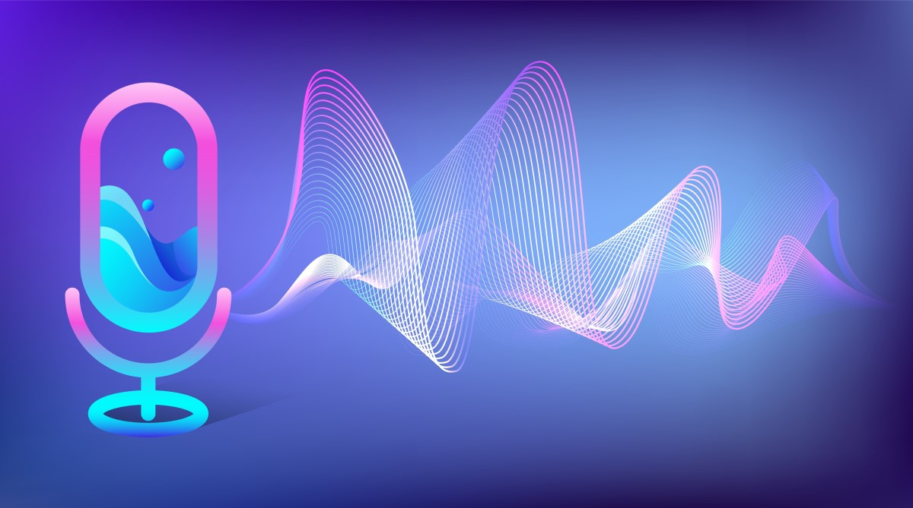
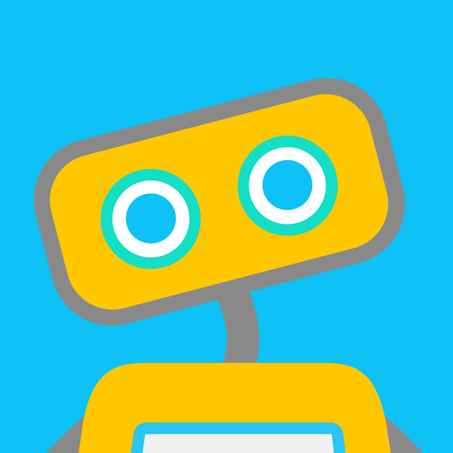

TVALL-E : l’outil IA de Microsoft qui peut imiter la voix d’une personne
VALL-E est basé sur un modèle de synthèse vocale par IA appelé Neural Text-to-Speech (Neural TTS), qui utilise un réseau de neurones pour générer des voix naturelles à partir de textes. Ce modèle est entraîné sur des données de voix de différentes personnes pour apprendre à reproduire les caractéristiques uniques de chaque voix. Contrairement à d'autres outils de synthèse vocale, VALL-E n'a pas besoin d'un enregistrement audio existant de la personne dont la voix doit être reproduite. Au lieu de cela, il utilise des échantillons de voix de la personne pour créer une voix de synthèse à partir de zéro. Selon Microsoft, VALL-E pourrait avoir des utilisations dans les jeux vidéo, les films, les publicités et autres médias. Il pourrait également être utilisé pour aider les personnes atteintes de troubles de la parole à communiquer plus facilement. Cependant, il y a également des préoccupations concernant l'utilisation potentielle de cette technologie à des fins de manipulation et de fraude. Par exemple, il pourrait être utilisé pour créer de fausses preuves audio ou pour imiter la voix de quelqu'un sans leur consentement. Microsoft a déclaré que VALL-E était encore à un stade préliminaire de développement et qu'il était destiné à être utilisé à des fins de recherche. Il n'a pas encore été annoncé quand ou si VALL-E sera commercialisé. En résumé, VALL-E est un outil d'IA de synthèse vocale qui peut reproduire la voix de n'importe quelle personne à partir de zéro, sans avoir besoin d'un enregistrement audio existant. Bien que cela puisse avoir des utilisations positives, il y a aussi des préoccupations concernant son potentiel pour la manipulation et la fraude. Microsoft a déclaré que la technologie était encore à un stade préliminaire de développement et destinée à la recherche. En savoir plus
La technologie de blockchain
.jpg)
La technologie de blockchain est une architecture décentralisée qui permet à plusieurs utilisateurs de partager des informations en toute sécurité et de manière transparente. Depuis sa création, la blockchain a évolué et est devenue une technologie clé pour de nombreux secteurs, notamment la finance, la logistique, la santé et l'énergie. Voici quelques-unes des dernières nouvelles et développements dans le domaine de la blockchain : Adoption accrue par les entreprises : De nombreuses grandes entreprises ont commencé à utiliser la blockchain pour résoudre des problèmes de conformité et de sécurité. Par exemple, Walmart utilise la blockchain pour suivre les produits alimentaires à travers sa chaîne d'approvisionnement, tandis que la banque espagnole BBVA utilise la blockchain pour gérer les documents d'identité et les contrats. Blockchain pour les élections : Les systèmes de vote basés sur la blockchain sont en train de devenir une réalité. Plusieurs projets pilotes ont été menés avec succès, comme celui mené par la ville de Moscou en Russie en 2019. La blockchain au service de la finance : La blockchain est de plus en plus utilisée pour améliorer les services financiers et bancaires. Les banques centrales commencent à explorer les cryptomonnaies et les stablecoins, qui sont des jetons numériques adossés à une monnaie fiduciaire. La blockchain pour la protection des données : La blockchain est une technologie qui permet de stocker des données en toute sécurité et de manière transparente. De nombreux projets utilisent la blockchain pour protéger les données sensibles, comme les dossiers médicaux ou les informations personnelles. La blockchain et l'Internet des Objets (IoT) : L'IoT est un domaine en pleine croissance, mais la sécurité reste un défi majeur. La blockchain peut aider à sécuriser les données de l'IoT en permettant la vérification des transactions et en fournissant des informations sur la provenance des données. En somme, la technologie de blockchain continue de progresser et d'être adoptée par un nombre croissant d'entreprises et de secteurs. Avec des applications potentielles dans de nombreux domaines, la blockchain est une technologie à surveiller de près dans les années à venir.
En savoir plusWoebot une ia de santé mentale
Woebot est une application de santé mentale qui utilise l'intelligence artificielle pour offrir une thérapie conversationnelle. Voici quelques-unes des dernières nouvelles et avancées technologiques concernant Woebot : En 2020, Woebot Labs a annoncé une nouvelle version de son application de thérapie conversationnelle basée sur l'IA, appelée Woebot 3.0. Cette version utilise des techniques d'apprentissage profond pour améliorer la capacité de Woebot à répondre aux besoins de chaque utilisateur. En 2021, Woebot a lancé une nouvelle fonctionnalité appelée "My Story", qui permet aux utilisateurs de créer une histoire personnelle en répondant à des questions sur leur vie et leur santé mentale. Woebot utilise ensuite cette histoire pour personnaliser les conversations avec l'utilisateur et fournir des conseils et des exercices de gestion de stress adaptés à son histoire. Woebot a également été utilisé dans des études de recherche sur la santé mentale. Par exemple, en 2021, une étude a été publiée dans la revue scientifique "JMIR Mental Health" montrant que Woebot était efficace pour réduire les symptômes de dépression chez les étudiants universitaires. En 2022, Woebot Labs a annoncé un partenariat avec Kaiser Permanente, l'un des plus grands systèmes de santé aux États-Unis. Kaiser Permanente utilisera Woebot pour offrir une thérapie conversationnelle à distance à ses patients souffrant de troubles de l'humeur et de l'anxiété. Woebot continue également de s'améliorer grâce à l'apprentissage automatique. En mars 2022, Woebot a annoncé qu'il avait atteint un score de précision de 90,1 % sur le test de classification des sentiments de l'Université de Stanford, ce qui signifie qu'il peut détecter avec précision l'humeur de l'utilisateur et adapter les conversations en conséquence. En conclusion, Woebot continue d'évoluer pour offrir une thérapie conversationnelle plus personnalisée et efficace grâce à l'IA et à l'apprentissage automatique. Il est également utilisé dans des études de recherche et dans des programmes de santé mentale à grande échelle.. En savoir plus